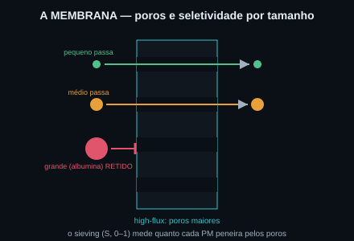
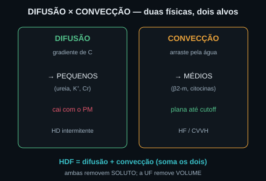
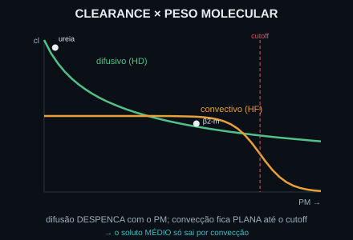
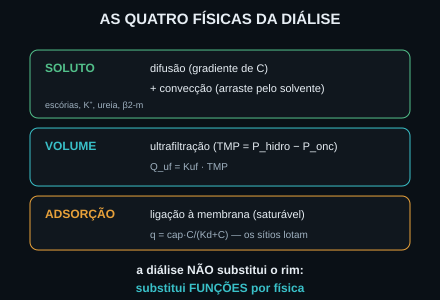

Conceito — as quatro físicas que substituem as funções do rim
A diálise é física aplicada. O rim defendia o meio interno
(homeostasia: volume, eletrólitos, ácido-base, escórias); quando ele falha, a máquina repõe essas
funções por quatro mecanismos físicos. Soluto sai por difusão e convecção; volume sai por
ultrafiltração; e parte do soluto adere à membrana por adsorção. As Fig. 1–8 voltam no Caso, na
Trilha e na Avaliação. Atribuição em CREDITS.md (em curadoria).
1. Difusão — o gradiente de concentração (e o peso molecular)
A difusão move soluto do compartimento de alta concentração (sangue) para o de baixa (dialisato), por Fick: J ∝ D·A·ΔC/Δx. O coeficiente D cai com o peso molecular (D ∝ PM−1/3): a ureia (60 Da) difunde rápido (D≈1); a β2-microglobulina (~11800 Da) difunde mal (D≈0,17). Por isso a difusão é ótima para pequenos e ruim para médios. O gradiente ΔC é a diferença de concentração entre sangue e dialisato (p.ex. K⁺ em mEq/L). Veja a Fig. 1.


2. Convecção — o arraste pelo solvente (o que a difusão não remove)
A convecção ("solvent drag") arrasta o soluto junto com a água que ultrafiltra: fluxo = Q_uf·C·S, onde S é o peneiramento. O ponto crucial: a convecção independe do peso molecular até o cutoff da membrana. Por isso ela remove o soluto médio (β2-m, citocinas) que a difusão deixa para trás. Em fluxo convectivo alto (HF/CVVH), para a β2-m a convecção supera a difusão. Veja a Fig. 3.


3. A curva clearance × peso molecular — a pérola do módulo
Plote o clearance contra o peso molecular: a curva difusiva começa alta e despenca com o PM; a curva convectiva fica quase plana até o cutoff e só então cai. Onde elas se cruzam está a pérola: o soluto médio só sai bem por convecção. Dobrar o PM derruba a difusão, mas quase não toca a convecção. Veja a Fig. 5 — é a mesma curva do Instrumento.

4. Ultrafiltração — a remoção de VOLUME pela pressão
Os dois mecanismos acima removem soluto. O volume sai por outra física: a ultrafiltração, dirigida por pressão, não por concentração. Q_uf = Kuf·TMP, com a TMP = P_hidrostática − P_oncótica. Se a oncótica vence a hidrostática (TMP ≤ 0), não há UF. A UF é também o motor da convecção (é a água que arrasta o soluto). Veja a Fig. 6.

5. Adsorção — a ligação à membrana, e a síntese das quatro físicas
A quarta física: parte do soluto adere à própria membrana — a adsorção, do tipo Langmuir: q = cap·C/(Kd+C). É saturável: quando os sítios lotam, a adsorção cessa (some com o tempo). Juntando tudo: a diálise repõe o meio interno por difusão + convecção (soluto), UF (volume) e adsorção (ligação). A homeostasia volta não porque o rim funcionou, mas porque a física substituiu a função. Fig. 7 e 8.


Caso — cinco solutos, decida o mecanismo antes de revelar
Mesa de diálise. Cinco perguntas físicas: qual mecanismo remove cada coisa — e por quê? Volte às Fig. 4 e 5: a física decide, não a marca da máquina.
Trilha socrática — nove perguntas que constroem a física
1. O que a diálise realmente substitui?
Não o rim — substitui algumas funções por física: difusão e convecção (soluto), ultrafiltração (volume), adsorção (ligação). A homeostasia do meio interno volta porque a física repõe a função (Fig. 8).
2. Como a difusão move o soluto?
Pelo gradiente de concentração: do sangue (alta C) ao dialisato (baixa C), seguindo Fick J ∝ D·A·ΔC/Δx. Cessa quando o gradiente zera (Fig. 1).
3. Por que a ureia difunde rápido e a β2-m não?
Porque o coeficiente D cai com o peso molecular (D ∝ PM−1/3). Ureia (60 Da) → D≈1; β2-m (~11800 Da) → D≈0,17. O médio difunde mal (Fig. 5).
4. O que é convecção?
O arraste do soluto pela água que ultrafiltra ("solvent drag"): fluxo = Q_uf·C·S. O sieving S (0–1) mede quanto o PM peneira pela membrana (Fig. 3).
5. Por que a convecção remove o médio que a difusão não remove?
Porque ela independe do peso molecular até o cutoff (S≈1). Enquanto a difusão despenca com o PM, a convecção fica plana — então, para a β2-m, a convecção supera a difusão (Fig. 4 e 5).
6. O que é HDF?
Hemodiafiltração: difusão + convecção no mesmo circuito. Soma os dois mecanismos — pega os pequenos (difusão) e os médios (convecção) ao mesmo tempo.
7. Como se remove VOLUME?
Por ultrafiltração, dirigida por pressão: Q_uf = Kuf·TMP, com TMP = P_hidrostática − P_oncótica (Fig. 6). É pressão, não concentração.
8. Quando NÃO há ultrafiltração?
Quando a TMP ≤ 0 — a oncótica venceu a hidrostática. Q_uf = Kuf·max(0,TMP) = 0: por mais que a máquina rode, sem TMP positiva não sai água (Fig. 6).
9. E a adsorção?
A ligação do soluto à membrana (Langmuir q = cap·C/(Kd+C)). É real mas saturável: quando os sítios lotam, cessa — a membrana precisa ser trocada (Fig. 7). Quatro físicas, um meio interno restaurado.
Instrumento — clearance × peso molecular (difusivo × convectivo)
Os controles do Lab movem este plano. Eixo horizontal = peso molecular (log, da ureia à albumina); eixo vertical = clearance (mL/min). A curva verde é o clearance difusivo (cai com o PM); a laranja é o convectivo (plano até o cutoff, depois despenca). A linha tracejada marca o cutoff da membrana; o marcador é o soluto atual, colorido pelo mecanismo dominante. Onde a laranja passa a verde está a pérola: o médio só sai por convecção.
Laboratório — escolha o soluto e a máquina; veja o clearance por mecanismo
| Saída | Atual | Comentário |
|---|---|---|
| Classe do soluto / mecanismo dominante | — | pequeno → difusão; médio → convecção |
| Coeficiente de difusão D / clearance difusivo | — | D ∝ PM⁻¹ᐟ³ · mL/min |
| Sieving S / clearance convectivo | — | fluxo = Q_uf·C·S |
| Clearance de soluto (modo combinado) | — | HDF soma difusão + convecção |
| TMP / Q_uf (remoção de volume) | — | Q_uf = Kuf·TMP (mmHg → mL/h) |
| Adsorção (fração saturada) | — | q = cap·C/(Kd+C), saturável |